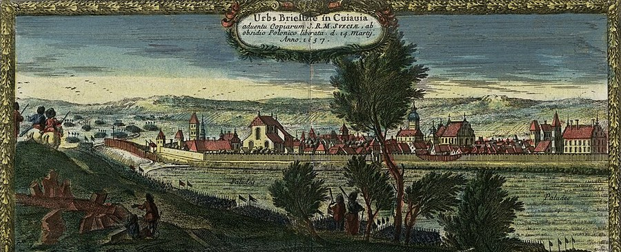

Brześć Kujawski¶
Relations
Events here: Peace of Brest (Brześć Kujawski): the Order drops Švitrigaila
Brześć Kujawski

Brześć Kujawski · place — Image: After Erik Dahlbergh, Public domain via Wikimedia Commons¶

Type |
place |
Note |
Kujavian town where the 31 December 1435 peace confirmed the Melno borders and required the Order to end its support for Švitrigaila. |
In the 1380s [Historical record]¶
Brześć Kujawski, on the Zgłowiączka river in Kuyavia, was a stronghold of the Dukes of Kuyavia from the 13th century and the capital of a small duchy from 1267 under Władysław the Elbow-high, who was crowned king in 1320. The Order occupied it in 1332 until the Treaty of Kalisz (1343) restored it to Poland; from the 14th century it was a royal town and the seat of a voivodeship, and Casimir III the Great expanded its brick royal castle. The last crusader siege failed in 1431. The Peace of Brześć Kujawski, 31 December 1435, ended the Polish-Teutonic war of 1431-35: the Order stopped backing Švitrigaila and agreed to support only dukes chosen jointly by Poland and Lithuania. The nobility’s demands that became the neminem captivabimus privilege were drawn up here in 1425. The council of early December 1409 that planned the Grunwald campaign is placed by some sources at Brześć Kujawski and by others at Brest-Litovsk on the Bug (the place is disputed). Do not confuse it with Brasta on the Bug. Sources: VLE (Bresto taika); en.wikipedia (Brześć Kujawski, Czerwińsk Floating Bridge).
Sensory sketch¶
Flat Kuyavian grain country: black soil, low willow-lined streams, long rows of rye and wheat stubble in autumn, brick church towers visible for miles, a royal castle of red brick beside a small town of timber houses. The air smells of manure, straw and wood smoke; carts crunch on frozen ruts. On the last day of December it is dark by four, the snow is dry, and sound carries a long way: bells, geese, a distant mill.
In the saga¶
A paper end to the Order’s war: the peace the saga treats as the Iron Saint’s retreat from Lithuania’s quarrels, observed from Vilnius in Book V ch. 15. Nothing mythic happens here: the Order signs because it can no longer pay for a war it does not win, and the saga lets the news arrive as a receipt.
Getting there¶
Brześć Kujawski is about 50 km from Toruń and 45 km from Raciążek on the Vistula, and about 160 km from Marienburg (c. 200 km by road, five to six days). From Kraków it is about 290 km (eight to ten days); from Vilnius some 480 km straight, c. 600 by road (two to three weeks). Envoys from the Order and the Crown met here on neutral Polish ground a few days from either capital.
Scenes set here¶
Book V ch. 15 Švitrigailos žlugimas (the peace of 31 Dec 1435, recalled as news at Polotsk and Lutsk); Book III ch. 13 Brastos pasitarimas (December 1409; the book places the council at Brasta on the Bug, a disputed identification); Book IV ch. 14 (the nobles’ demands of 1425).
Timeline¶
Year |
Event |
Book |
|---|---|---|
1435-12-31 |
Peace of Brest (Brześć Kujawski): the Order drops Švitrigaila |
V · Vilko Palikimas |
Connections¶
graph LR
brzesc_kujawski["Brześć Kujawski"]
ev_brest_peace["Peace of Brest (Brześć Kujawski): the Order drops Švitrigaila"]
ev_brest_peace -->|Location| brzesc_kujawski
style brzesc_kujawski stroke-width:3px